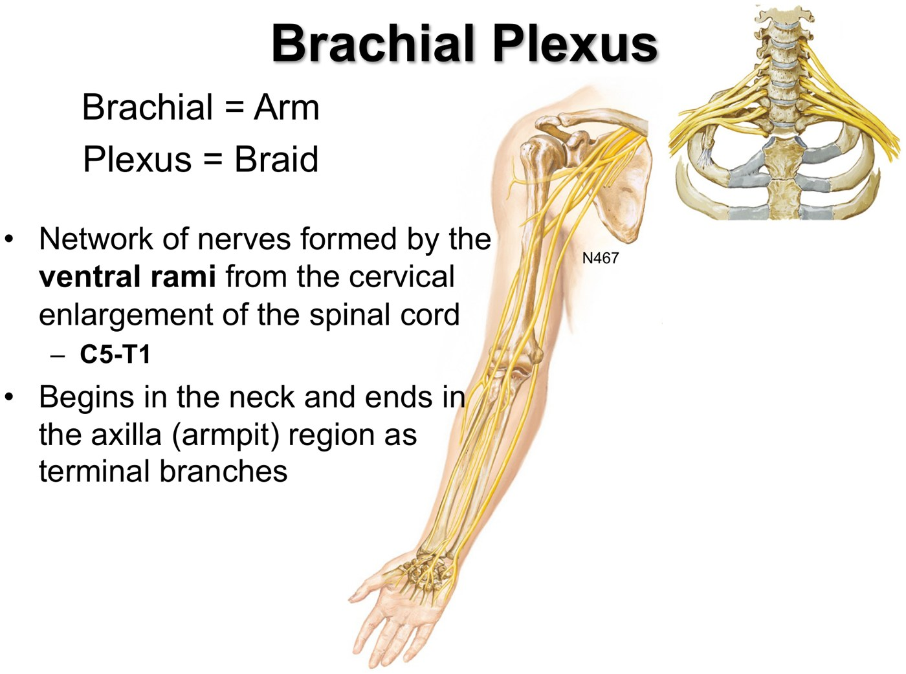
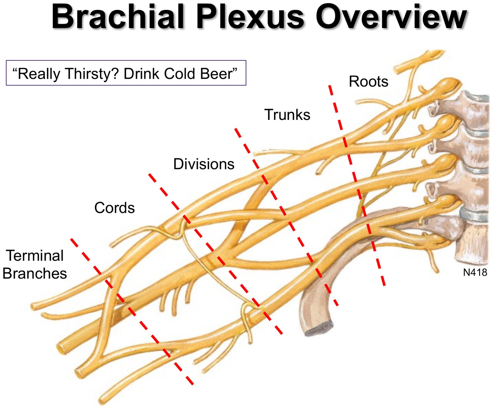
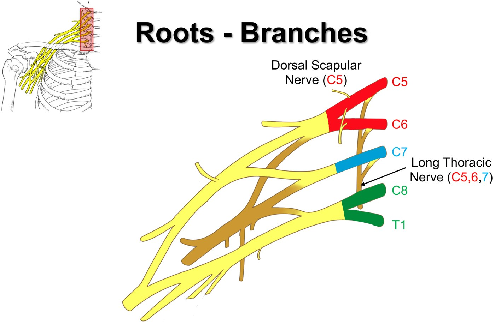
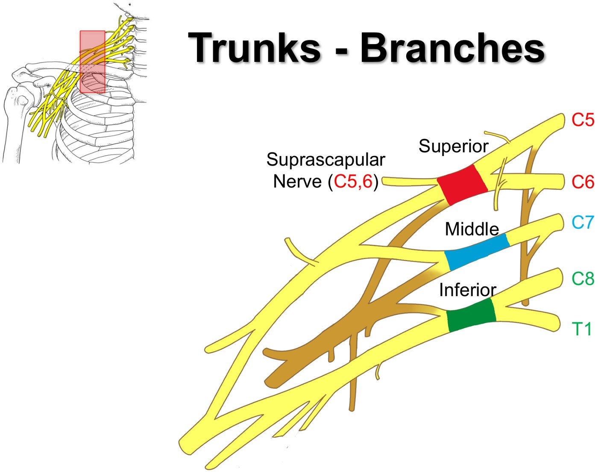
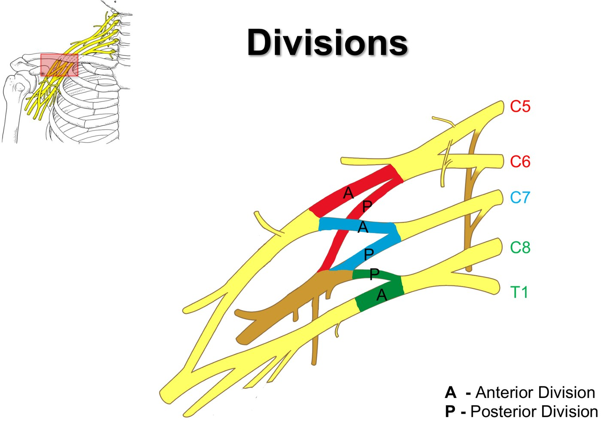
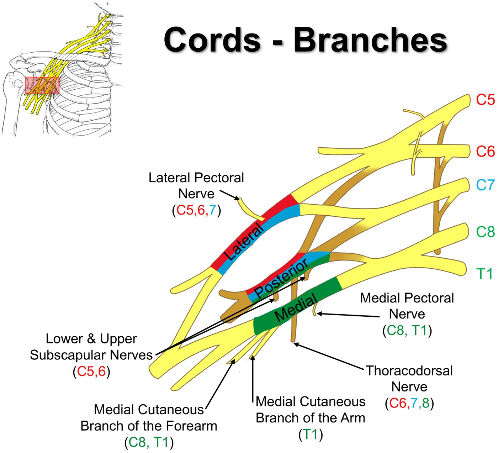
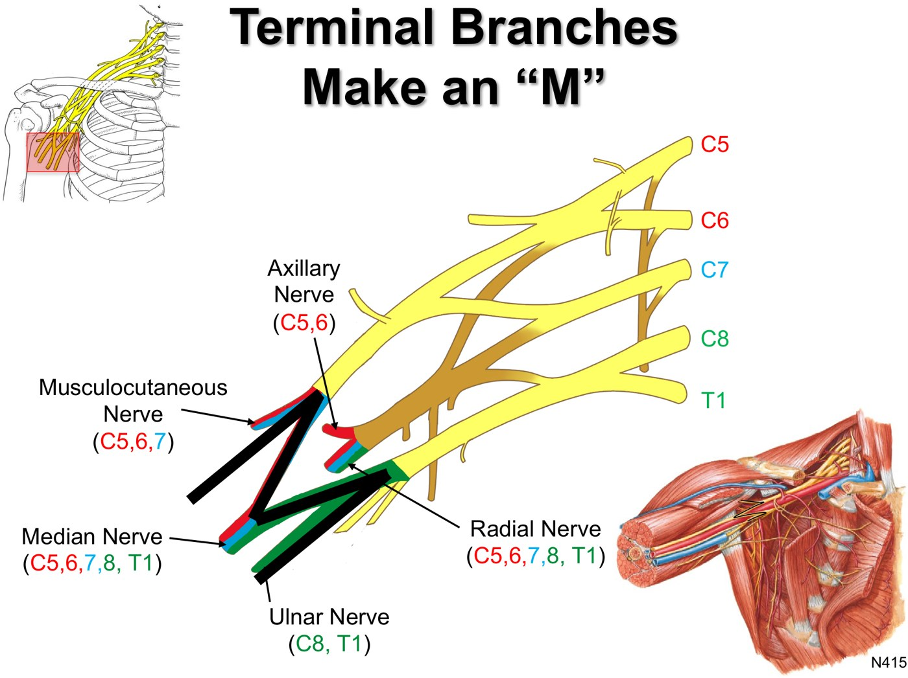
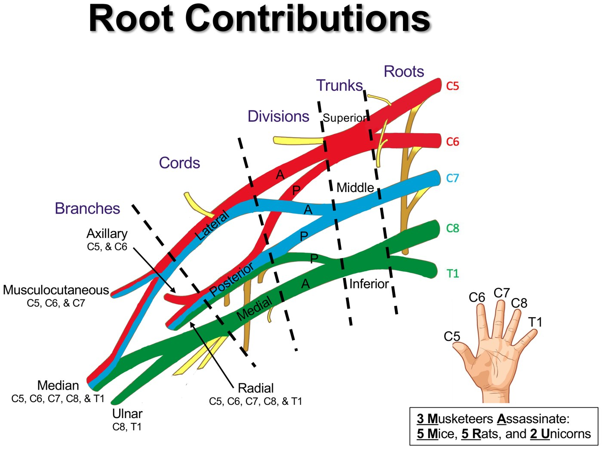
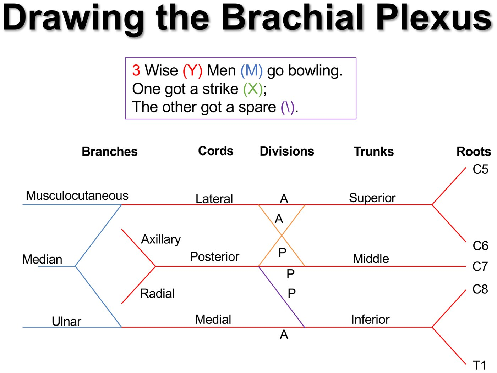

Brachial Plexus
- The brachial plexus is a braid of the ventral rami of C5–T1. It starts in the neck and ends at the bottom of the axilla (the inferior border of teres major), where only its terminal branches carry on into the limb. Its “roots” are ventral rami, not the dorsal and ventral roots of a spinal nerve.
- Roots → trunks → divisions → cords → terminal branches: “Really Thirsty? Drink Cold Beer.”
- Branches by level: roots give the dorsal scapular (C5) and long thoracic (C5–7). Trunks give only the suprascapular (C5–6). Divisions give nothing: anterior divisions feed the flexor compartments, posterior divisions the extensors.
- Cords are named for where they sit around the axillary artery: lateral, medial and posterior. That's also why the medial pectoral nerve can lie lateral to the lateral pectoral nerve: nerves are named for their cord, not their position.
- Terminal branches: the “M” is musculocutaneous, median and ulnar (lateral and medial cords); the posterior cord ends as axillary and radial. Roots: “3 Musketeers Assassinate 5 Mice, 5 Rats and 2 Unicorns” (MC C5–7, axillary C5–6, median C5–T1, radial C5–T1, ulnar C8–T1).
- Why it matters: every upper-limb nerve lesion for the rest of MSK is solved with this map. For any site, predict what is lost downstream, motor and sensory.
Learning Objectives
- Identify the important functional anatomy of the upper extremity, as it pertains to clinical presentations of arm pathology.
- Identify the components of the brachial plexus and its anatomic relationships to surrounding structures.
- Determine the sensory and motor loss anticipated with injuries to specific sites of the plexus (the roots and the terminal branches).
Dr. Charys Martin's 50-minute module: one recording plus a knowledge check. It builds on the neck and back modules. Dr. Martin's advice: work through it, then practise drawing the plexus a few times before the lab (Tuesday's Clinical Anatomy of the Proximal Upper Extremity Part I). Lesion localization is applied in the modules that follow.
What the Plexus Is
Brachial = arm, plexus = braid. The ventral rami of the cervical enlargement (C5–T1) merge and re-split, so most upper-limb muscles end up supplied by more than one root. Everything above the cords sits in the neck; the cords and terminal branches are what you see in the axilla.

From the neck to the axilla. Slide from the deck (Netter plate).
The five sections, medial (right) to lateral (left) on this right-side plexus. “Really Thirsty? Drink Cold Beer.” Slide from the deck.On every diagram C5 and C6 are red (they almost always travel and innervate together), C7 is blue (it does its own thing), and C8 and T1 are green (they usually travel together). Follow the colours down and you can read each nerve's root contributions off the picture.
Roots, Trunks and Divisions
| Level | Made of | Branches you need |
|---|---|---|
| Roots (5) | Ventral rami C5, C6, C7, C8, T1. Mixed: motor + sensory | Dorsal scapular (C5): pierces middle scalene → rhomboids (and levator scapulae) Long thoracic (C5, 6, 7): runs down the lateral thoracic wall on the superficial surface of serratus anterior |
| Trunks (3) | Superior = C5 + C6 Middle = C7 alone Inferior = C8 + T1 | Suprascapular (C5, 6), off the superior trunk → supraspinatus and infraspinatus |
| Divisions (6) | Each trunk splits into an anterior and a posterior division | None. Anterior divisions → nerves of the flexor (anterior) compartments; posterior divisions → nerves of the extensor (posterior) compartments |

Root branches: dorsal scapular (C5) and long thoracic (C5, 6, 7). Slide from the deck.
Trunk branch: the suprascapular nerve (C5, 6) leaves the superior trunk. Slide from the deck.
Divisions: three anterior, three posterior, and no branches. Slide from the deck.Don't let the nerve to subclavius (C5, 6) confuse you on diagrams. Dr. Martin points it out only so you don't think you've missed something: the muscle and the nerve aren't taught.
Cords and Their Branches
The cords are named for their relationship to the axillary artery: the lateral cord lies lateral to it, the medial cord medial, and the posterior cord behind it.
| Cord | Formed by | Branches (roots) → supply |
|---|---|---|
| Lateral | Anterior divisions of the superior + middle trunks | Lateral pectoral (C5, 6, 7) → pectoralis major and minor (runs superomedial to pec minor) Then the musculocutaneous nerve and the lateral root of the median nerve |
| Medial | Anterior division of the inferior trunk (it just changes name) | Medial pectoral (C8, T1) → pierces pec minor, then pectoralis major Medial cutaneous nerve of the arm → skin of the medial arm Medial cutaneous nerve of the forearm (C8, T1) → skin of the medial forearm Then the medial root of the median nerve and the ulnar nerve |
| Posterior | All three posterior divisions | Upper subscapular (C5, 6) → subscapularis Thoracodorsal (C6, 7, 8; aka middle subscapular) → latissimus dorsi Lower subscapular (C5, 6) → subscapularis and teres major Then the axillary and radial nerves |

In the cadaver the medial pectoral nerve often lies lateral to the lateral pectoral nerve. They aren't named for where you find them; they're named for the cord they come off.
Terminal Branches: Find the “M”
The lateral and medial cords join in an M: musculocutaneous is the lateral leg, the two roots of the median nerve are the middle, and the ulnar nerve is the medial leg. The posterior cord gives off the axillary nerve, then continues as the radial.
| Nerve (roots) | From | Motor | Sensory | Course in the arm |
|---|---|---|---|---|
| Musculocutaneous (C5, 6, 7) | Lateral cord | All the anterior arm muscles | Ends as the lateral cutaneous nerve of the forearm | Pierces coracobrachialis, then runs between brachialis and biceps |
| Median (C5–T1) | Lateral + medial roots | Most forearm flexors and five hand muscles | Part of the hand | Lateral to the brachial artery, crosses medial to it mid-arm; in the cubital fossa, deep to the bicipital aponeurosis and the median cubital vein |
| Ulnar (C8, T1) | Medial cord | 1½ anterior forearm muscles and most hand muscles | Medial side of the hand | Medial in the anterior compartment, then pierces the medial intermuscular septum at mid-arm into the posterior compartment |
| Axillary (C5, 6) | Posterior cord | Deltoid and teres minor | Skin of the shoulder | — |
| Radial (C5–T1) | Posterior cord (its continuation) | Triceps and the extensors of the posterior arm and forearm | Posterior upper limb | Behind the brachial artery, then with the profunda brachii in the radial groove; pierces the lateral intermuscular septum to run between brachialis and brachioradialis |

The M. Find the axillary artery first: the lateral and medial cords flank it and point you straight to the M. Slide from the deck.
Root contributions on your fingers (thumb = C5): 3 Musketeers (musculocutaneous C5–7), Assassinate (axillary, C5–6: the “gun”), 5 Mice (median), 5 Rats (radial), 2 Unicorns (ulnar, C8–T1). Slide from the deck.Knowledge check (cadaver photo described, not shown)
A dissection with the clavicle removed, labelled A–H. Start with the axillary artery (it becomes the subclavian at the first rib, and the subclavian passes deep to anterior scalene). The ventral rami emerge between anterior and middle scalene. Answers: A C7 root · B superior trunk · C axillary artery · D lateral cord · E posterior cord · F musculocutaneous (it dives straight into coracobrachialis, an easy landmark) · G median · H ulnar.
Cutaneous Nerves of the Arm and Forearm
| Nerve | Comes from | Skin it supplies |
|---|---|---|
| Posterior cutaneous nerves of the arm and forearm | Radial nerve | Posterior arm and forearm |
| Lateral cutaneous nerve of the forearm | Musculocutaneous (its end) | Lateral forearm |
| Medial cutaneous nerve of the arm | Medial cord | Medial arm (and axilla) |
| Medial cutaneous nerve of the forearm | Medial cord (runs with the ulnar nerve) | Medial and anterior forearm |
Draw It
You need to be able to draw the plexus from memory, then move past drawing to lesions: if this nerve or this root were cut, what would the patient lose, and how would they present?
Draw three Ys, head to toe: two open at the roots end, one at the branches end. Add the M for the terminal branches.
The X and the \ are the crossing divisions.
Roots C5–T1 top to bottom; superior, middle, inferior trunks; every trunk sends a posterior division to the posterior cord; lateral, posterior and medial cords; then axillary and radial (posterior cord) and musculocutaneous, median and ulnar (the M).

Built from Dr. Charys Martin's “Brachial Plexus” module: the 50-minute recording, its knowledge check, the 17-slide student deck and her mini-text. The two cadaver photographs (the “M” and the knowledge check) are left out and described in text. Discrepancies flagged: the slide gives the medial cutaneous nerve of the arm as T1, the mini-text as C8–T2. The mini-text's cutaneous list calls the musculocutaneous nerve's branch the “lateral cutaneous nerve of the arm”; it is the lateral cutaneous nerve of the forearm, as the mini-text itself says earlier. The mini-text gives the dorsal scapular nerve to the rhomboids; the recording adds levator scapulae. Caption corrections: rami (“ramm”, “re my”), axilla (“zilla”, “SLA”), teres major (“Terri's major”), rhomboids (“Ron Boyd's”), serratus anterior (“sorry this interior”), suprascapular (“super scapula”), subclavius (“subclavian”), cords (“courts”, “corps”), thoracodorsal (“sort through dorsal”), latissimus (“Miss Dorsey”), musculocutaneous (“muscular Octavius”), coracobrachialis (“caulk over heels”), scalenes (“scaling”), ulnar (“Almer”) and radial (“radio”).